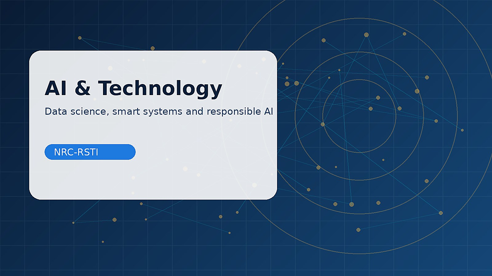
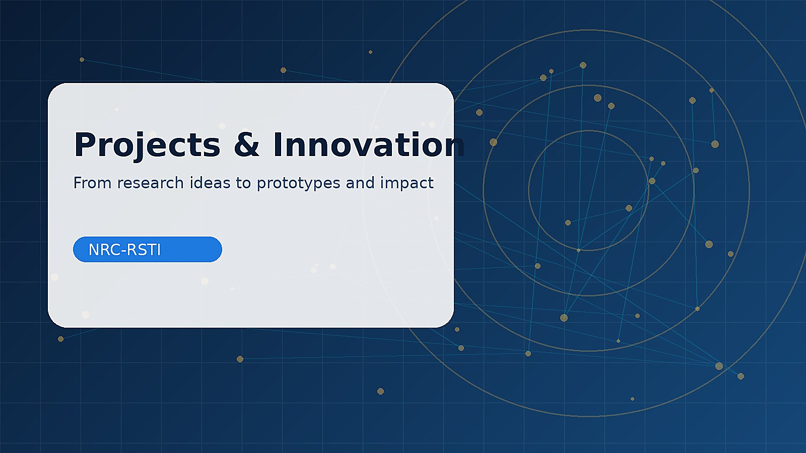
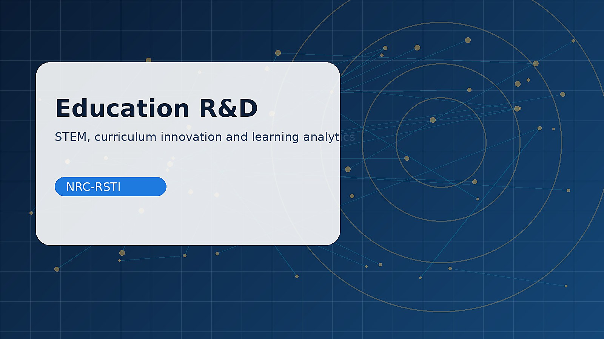

نموذج تصنيف صور تعليمي
مشروع تدريبي لتعليم مبادئ Computer Vision بطريقة عملية.
مساحة لعرض النماذج الأولية، مشاريع AI، IoT، الإلكترونيات، الروبوتات، والدراسات التطبيقية.

مشروع تدريبي لتعليم مبادئ Computer Vision بطريقة عملية.

نموذج أولي لقياس الحرارة والرطوبة وإرسال البيانات.
مشروع روبوتات يدمج التحكم، الإلكترونيات، والبرمجة.

حزمة أنشطة تعليمية قابلة للتطبيق في المدارس والمراكز.